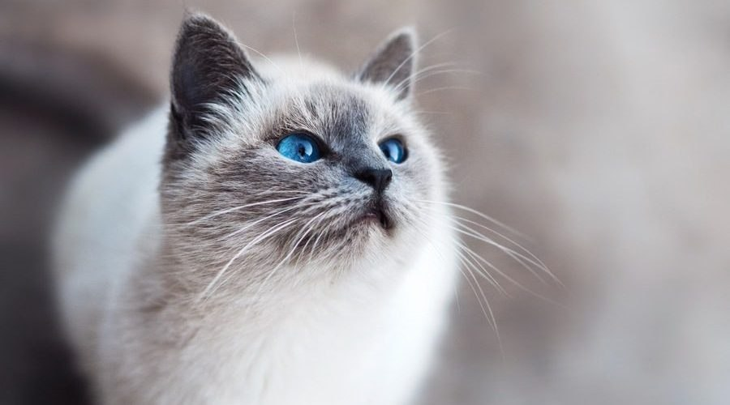

Гордый самостоятельный кот. Плохо ладит с детьми и другими животными.
Серьезный и вдумчивый кот. Хорошо ладит с другими животными, но плохо с детьми. Нуждается в регулярном вычесывании.

Игривая и веселая кошечка, можно брать в пару к другим питомцам или детям.
Ленивый и толстенький кот. Привередлив в еде. Будет спать, где захочет.

Хороший охотник, избавит дом от любой нежелательной живности. С детьми ладит хорошо.

Молодой стеснительный котик. Нуждается в большом количестве любви и ласки. Хорошо подойдет одиноким людям.

Маленький игривый клубочек шерсти, не любящий сидеть на одном месте. Очень ласковый, идеальный выбор для семейной пары с детьми.

Большой волосатый комок любви. Любит делать кусь за пяточки. Не любит чужих людей и других животных.

Добродушный и немного ленивый кот. Отлично ладит со всеми людьми и животными.

Спокойный и рассудительный кот, хорошо уживается с остальными котами. С другими видами домашних животных не ладит. Привередлив в еде.